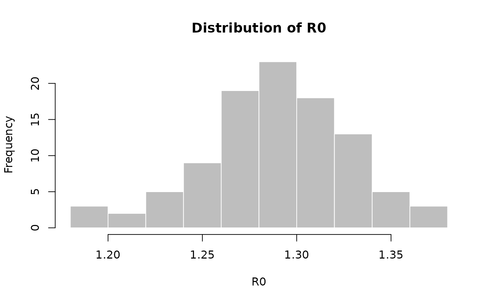

The function r2R0 can be used to transform a growth rate into a
reproduction number estimate, given a generation time distribution. This uses
the approach described in Wallinga and Lipsitch (2007, Proc Roy Soc B
274:599–604) for empirical distributions. The function lm2R0_sample
generates a sample of R0 values from a log-linear regression of incidence
data stored in a lm object.
r2R0(r, w, trunc = 1000)
lm2R0_sample(x, w, n = 100, trunc = 1000)A vector of growth rate values.
The serial interval distribution, either provided as a
distcrete object, or as a numeric vector containing
probabilities of the mass functions.
The number of time units (most often, days), used for truncating
w, whenever a distcrete object is provided. Defaults to 1000.
A lm object storing a a linear regression of log-incidence
over time.
The number of draws of R0 values, defaulting to 100.
It is assumed that the growth rate ('r') is measured in the same time unit as the serial interval ('w' is the SI distribution, starting at time 0).
## Ebola estimates of the SI distribution from the first 9 months of
## West-African Ebola oubtreak
mu <- 15.3 # days
sigma <- 9.3 # days
param <- gamma_mucv2shapescale(mu, sigma / mu)
if (require(distcrete)) {
w <- distcrete("gamma", interval = 1,
shape = param$shape,
scale = param$scale, w = 0)
r2R0(c(-1, -0.001, 0, 0.001, 1), w)
## Use simulated Ebola outbreak and 'incidence' to get a log-linear
## model of daily incidence.
if (require(outbreaks) && require(incidence)) {
i <- incidence(ebola_sim$linelist$date_of_onset)
plot(i)
f <- fit(i[1:100])
f
plot(i[1:150], fit = f)
R0 <- lm2R0_sample(f$model, w)
hist(R0, col = "grey", border = "white", main = "Distribution of R0")
summary(R0)
}
}
#> Loading required package: outbreaks
#> Loading required package: incidence
#> Warning: 22 dates with incidence of 0 ignored for fitting

#> Min. 1st Qu. Median Mean 3rd Qu. Max.
#> 1.196 1.269 1.292 1.293 1.314 1.406